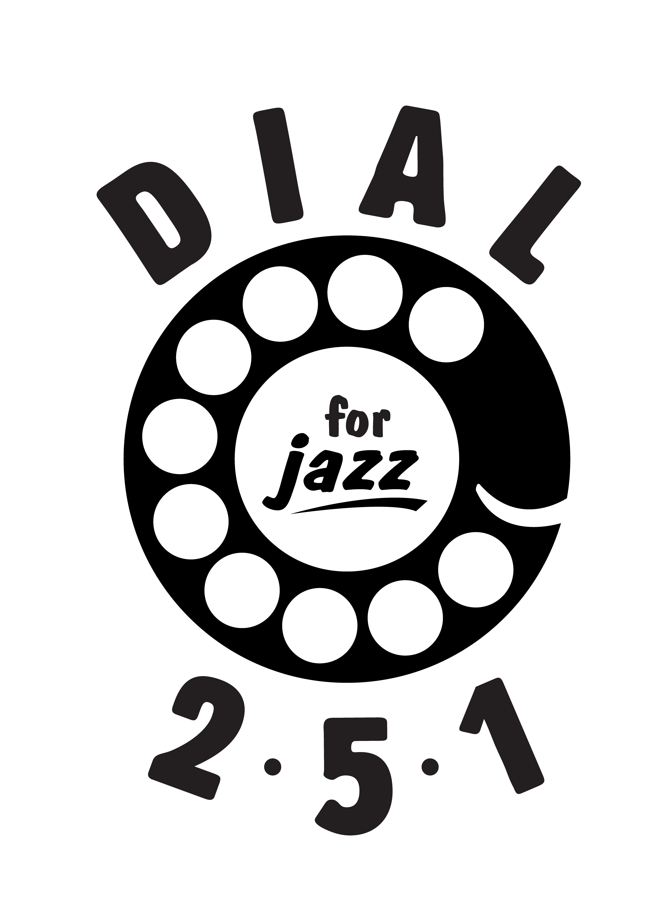
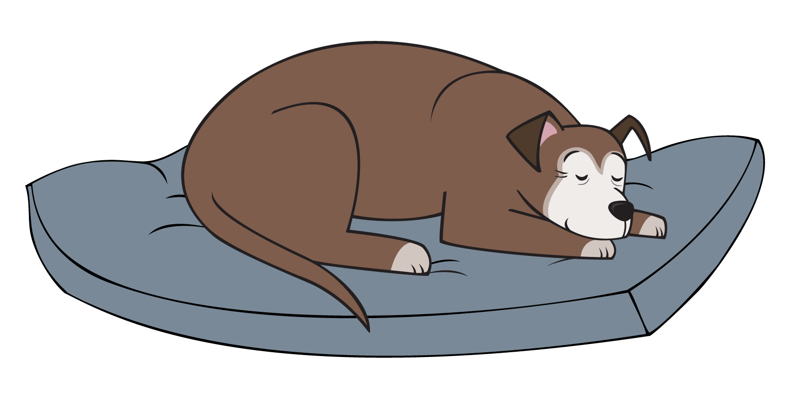
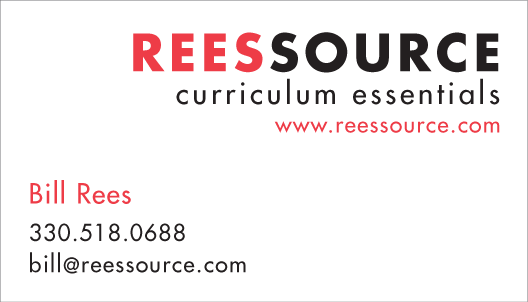
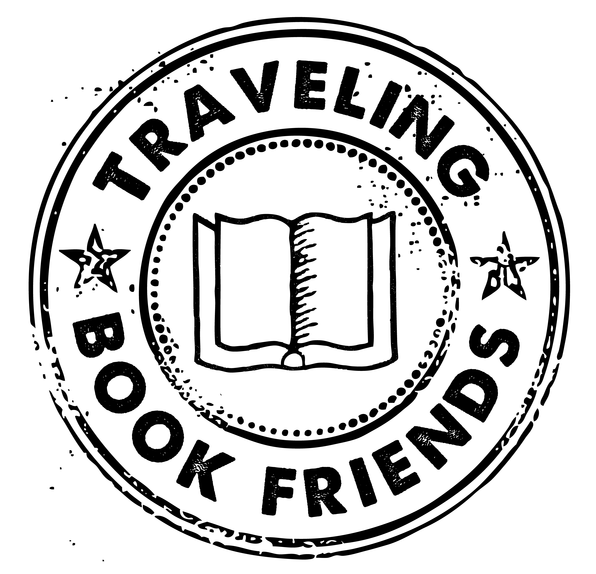

Pithy statement
Design
 Show
Show
- 

- 
- 
- 

Other Projects

A blog about art history and dogs. Fun and a little scholarly!

I like to sing and noodle around on the uke. What I lack in skill I make up for in enthusiasm.
About
I am actually kind of a shitshow, plagued by crippling insecurity and existential ennui.
Words, pictures, words and pictures, words as pictures—I love them. I am drawn to clean lines, strong contrasts, bold forms, and designs that evoke a particular time period.
I love the process of creating—bouncing around ideas with other people, solving problems, and making a vision manifest in an attractive and practical product.
My goal is to create pieces that are clear and engaging, in which the design serves the message.
Design is an important facet of my work as a publishing and communications professional. In that role, I am also adept at editing, production, and project management. My combination of skills and experience gives me a unique ability to find the most effective ways of presenting information—in words, images, or both.
Contact
Contact info